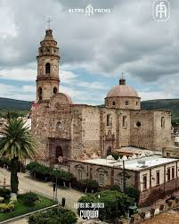
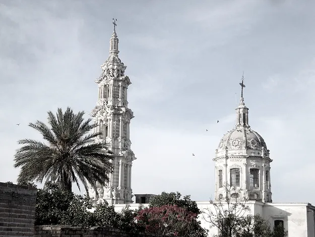
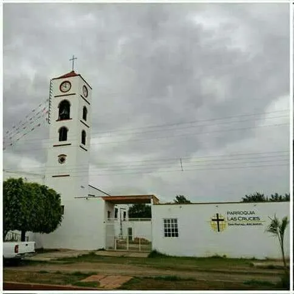
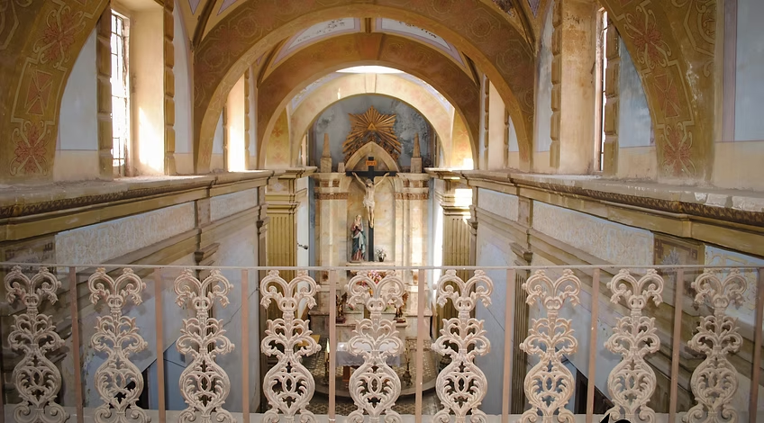

Parroquia San Felipe

La Parroquia de San Felipe de Cuquío es la más antigua de la región. Su primer libro de registro de bautismos data del año de 1666 y su jurisdicción abarcaba los actuales municipios de Yahualica, Ixtlahuacán del Río y Cuquío.
Su construcción comenzó en 1761 en un terreno donado por la familia González de Islas y fue terminada en 1843. Durante la lucha de Independencia este edificio ya estaba en construcción y fue utilizado como fuerte de las tropas realistas que tomaron Cuquío desde 1811 hasta 1814. También fue cuartel militar durante la lucha cristera y escenario de enfrentamientos y fusilamientos de cristeros.
Quien visite este lugar podrá observar cómo la construcción refleja la gran historia que nos enorgullece, desde el estilo colonial de su arquitectura hasta las huellas de balas en su fachada. En el interior aún se conserva parte de la riqueza del porfiriato: esculturas finamente talladas, candiles europeos y fechas inscritas que revelan el paso del tiempo.
Templo del Sagrado Corazón

La construcción de este edificio inició el 29 de marzo de 1906 en un terreno donado por la señora Antonia González. Su propósito principal era ser un lugar de oración para el asilo de párvulos que se construiría en la parte trasera, inaugurado en enero de 1907 con la misma donadora como directora.
Durante la segunda década del siglo XX, la construcción se detuvo por motivos de seguridad, por lo que se levantó una barda de adobe para proteger el recinto de grupos de bandoleros. En 1916 el altar mayor ya estaba terminado, y en ese tiempo la madre María Teresa González Estévez se hizo cargo de la escuela, que luego se convirtió en orfanatorio.
Este templo combina el estilo neobarroco del porfiriato con detalles neoclásicos en columnas y contrafuertes, logrando una armonía arquitectónica excepcional. El interior, restaurado en 2003, también mezcla estilos que hacen de este lugar una joya reconocida en los Altos de Jalisco.
Es uno de los templos más bellos de la región. ¿Te animas a contar todos los detalles artísticos en su torre y cúpula?
Capilla de Las Cruces

Este sitio religioso se caracteriza por su serenidad y tradición. Es un punto de reunión importante durante eventos religiosos locales como peregrinaciones y procesiones del Viacrucis.
Templo de Nuestra Señora de los Dolores

El 20 de abril de 1900 se bendijo la primera piedra para la construcción de este templo, ubicado entre una casa donada por don José Sánchez Mercado —donde se estableció un hospital— y una casa de ejercicios aún en construcción. Para 1910 ya estaba terminado y en abril de 1911 comenzó su decoración.
La dedicación de la iglesia se celebró el 9 de febrero de 1912 a las 4 de la mañana, con gran participación de los feligreses. La arquitectura es de estilo ecléctico, con influencias del neobarroco y detalles neoclásicos, visibles sobre todo en las columnas jónicas de la cúpula.
En su interior también se perciben detalles góticos, especialmente en el altar mayor. Las pinturas murales al temple, hechas con pigmentos naturales, cal y clara de huevo, revelan el alto nivel artístico de la época porfiriana.
Es un espacio que invita a viajar en el tiempo y a admirar el esfuerzo artístico y espiritual de sus constructores.